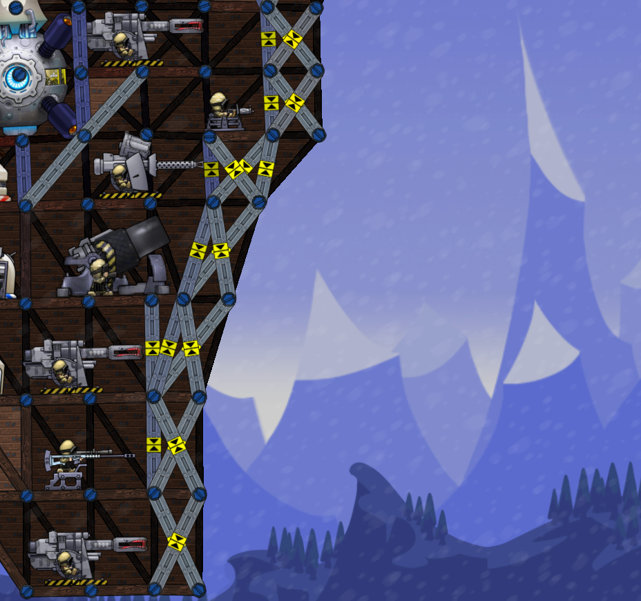
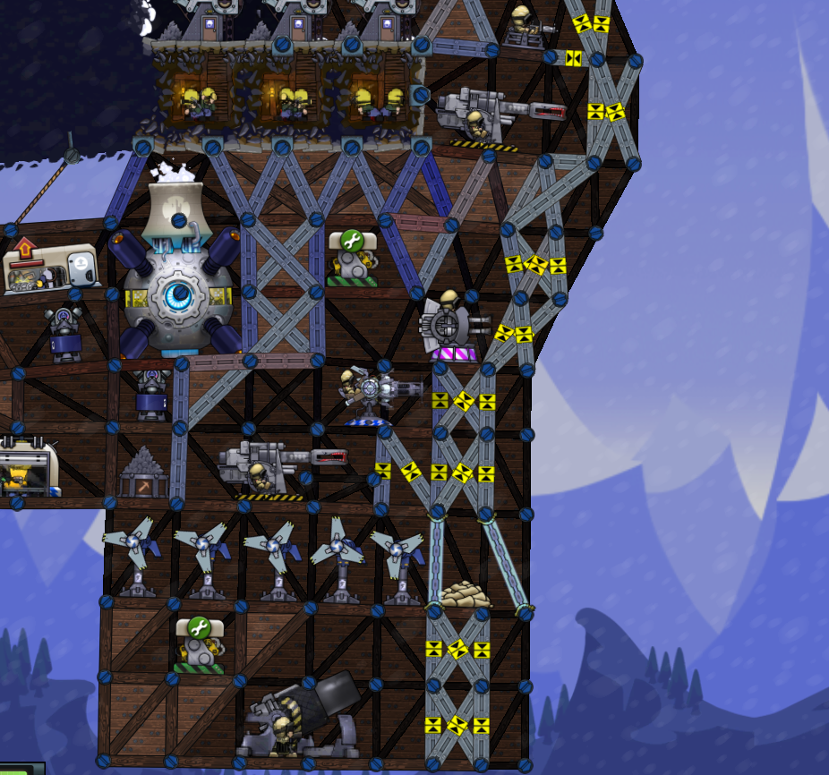
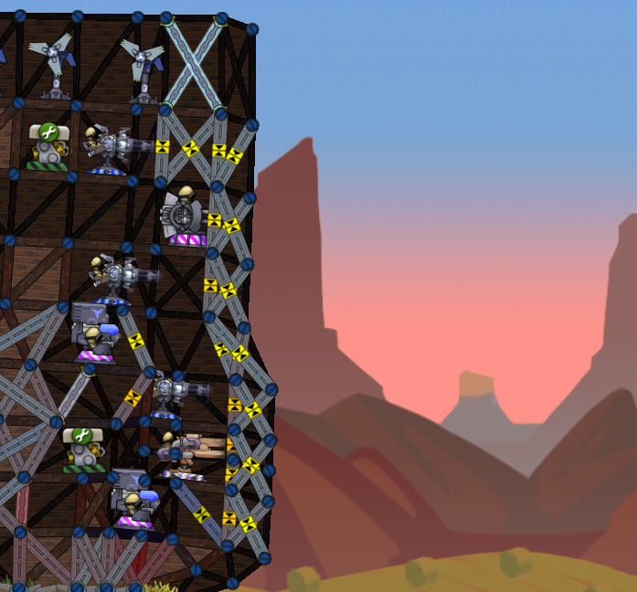

Играть в forts без тактики, это всё равно, что сдавать тест в школе не зная правил. Есть множество тактик, в этой статье приведины некоторые.
В начале игры лучше продать немного брони и пулемёт, дальше надо строить технологию первого тира (или центр улучшений в зависимости от тактики), после его постройки копите на технологию второго тира (или начинайте играть сразу, так же зависит от тактики).
Лучшие командиры для этой стратегии это Бородавочник или Ураган, но с DLC можно взять Buster.
Вся суть тактики - тяжёлое оружие с военного завода, но можно ставить оборону в виде зенитки или пулемёта, а так же снайперов.
Лучшие герои это Бородавочник или то же Ураган, но с DLC можно взять Buster.
Вся суть тактики - бить пушками и лазерами, попутно можно поджигать свои снаряды (палубного орудия или ховайтзера) с помощью пожарного луча.
Лучшие герои для этой стратегии это Ураган, Скряга или Овердрайв.
Суть тактики - пускаешь лазеры по базе врага и ЭМИ ракеты по щитам врага.
Лучший герой - Броненосец (без него эта тактика и не получится, ведь только для него доступны бронебойные миниганы).
Стратегия разворачивается быстро и не обязательно строить технологии второго тира. Так же можно добавить ЭМИ ракеты по желанию.

Есть ещё много стратегий, к примеру играть ракетами класса рой и боеголовками. Вы можете сделать стратегии сами.